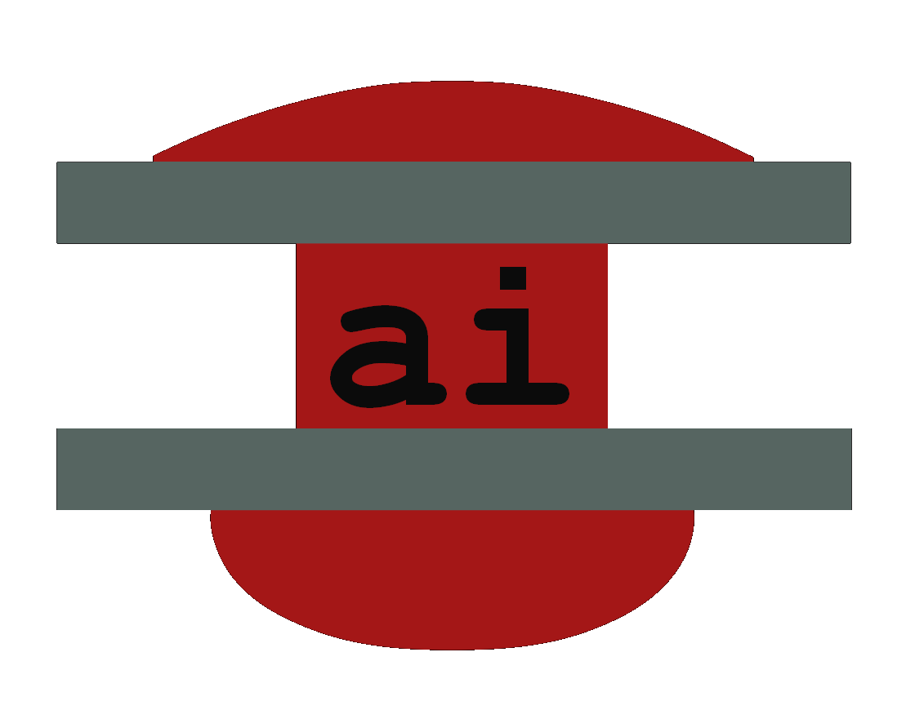

F.1 AI#
{kind=link}

[1] AI context#
rivt is a Python library and language that takes Python and text strings as input. This makes rivt a natural fit for main AI models and interfaces.
Using AI with rivt is in an early stage of development. In order to put rivt in a current context, a summary of relevant models and tools is provided here. In brief, AI is built on a few large foundational models with a large number of UIs, IDEs and agents that provide interfaces to the models.
[2] VSCode Copilot#
The VSCode IDE has been used to develop rivt. VSCode is integrated with Microsoft Copilot, an AI coding assistant powered by the OpenAI foundation model. Copilot has been exposed to rivt markdown and is able to make editing and content suggestions.
Currently, one of the most effective uses of Copilot, is to use it to generate csv tables and equations models, calculations and design justifications. With a few text prompts Copilot generates csv table files and inserts them into the rivt-report folder. The csv tables can then be read into rivt documents.
Two examples follow. The responses can be directly inserted into a rivt file.
Copilot Prompt:
Generate a csv table of weight values per unit length
of Douglas Fir 2x joists.
Response:
csv file generated by Copilot and inserted into the rivt-report folder
========= ================ ================ ========== ==================
Nominal ActualWidth_in ActualDepth_in Area_in2 Weight_lb_per_ft
========= ================ ================ ========== ==================
2x2 1.5 1.5 2.25 0.53125
2x4 1.5 3.5 5.25 1.23958
2x6 1.5 5.5 8.25 1.94875
2x8 1.5 7.25 10.875 2.56771
2x10 1.5 9.25 13.875 3.275
2x12 1.5 11.25 16.875 3.98438
4x4 3.5 3.5 12.25 2.89236
========= ================ ================ ========== ==================
Copilot Prompt:
Write ASCII equations for the bending moment of a simply
supported beam with a center point load.
Response:
For a simply supported beam of span `L` with a concentrated load
`P` at midspan, the bending moment is:
M(x) = { P*x/2 for 0 <= x <= L/2
{ P*(L-x)/2 for L/2 <= x <= L
The maximum bending moment occurs at midspan:
Mmax = P * L / 4
And the bending stress is:
sigma = M * c / I
So at midspan:
sigma_max = (P * L / 4) * c / I
[3] AI agents#
Effective methods for using AI to generate complete rivt files for specific project requirements is currently being explored. AI agents that target that goal are planned for release as a software service in the latter part of 2026.